Índice
- Perifericos
-
USB
- Otros puertos
- Tipos de teclado.
-
Elementos de impresión.
-
Elementos de almacenamiento
- Elementos de visualización.
- Elementos de digitalización.
Perifericos
-
Puertos: interfaz entre un ordenador y otros ordenadores o periféricos.
-
Periférico: dispositivo que se conecta al ordenador a través de un puerto y hace algo.
- 2 tipos
- Entrada: teclado, ratón, escáner, lector de huellas, etc.
- Salida: pantalla, altavoz, impresora.
USB (Universal Serial Bus)
Tipos de USB
| Versión |
1.0 |
2.0 |
3.0 (SS, Super Speed) |
3.1 |
| Velocidad |
1.5-12Mbits/s |
480Mbits/s |
5Gbits/s |
10Gbits/s |
| Características |
|
|
Conector azul |
- A: es el USB estándar.
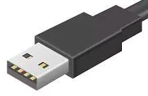
- B: es el USB cuadrado.
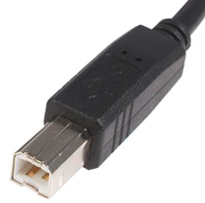
- A y B: tienen 4 pines de voltaje (Voltaje, Data-, Data+ y tierra).
| Pin |
Señal |
Color |
Descripción |
| 1 |
Vcc |
|
+5V |
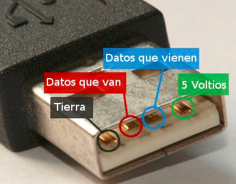
|
| 2 |
D- |
|
Data- |
| 3 |
D+ |
|
Data+ |
| 4 |
GND |
|
Masa |
Otros puertos
-
eSata: External Satades de discos duros externos.
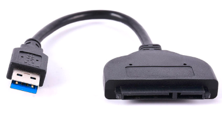
- Ethernet.
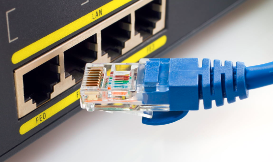
- Firewire: diseñado por apple.
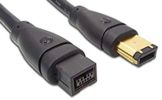
-
Para pantallas:
- HDMI.
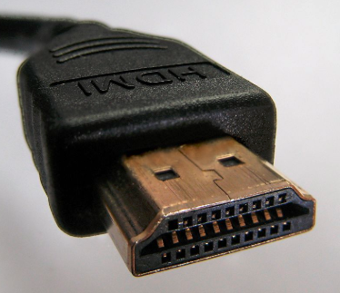
- DVI: para pantallas LCD.
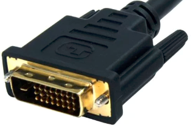
- VGA:

- Jack (conector Audio Analógico): para conectar micrófonos, auriculares, y otros sistemas de señal analógica.
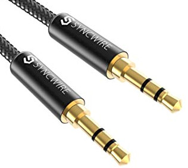
- SCSI: para discos duros y cintas. (Small Computer System Interface).
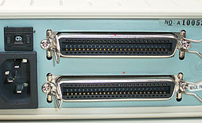
- PS/2: Conector para teclado y ratón con 6 pines . Aunque electrónicamente son similares, pueden no ser intercambiables (verde para el ratón y violeta para teclado).
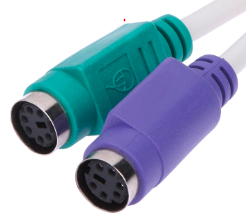
- Puerto paralelo
- Envia varios bits a la vez -> necesita varias líneas de datos.
- Utlizado para las impresoras hasta que llego el USB.
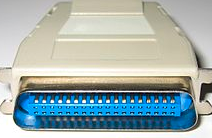
- Puerto serie: transmite un bit a la vez.
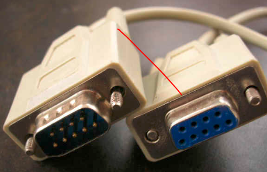
- Thunderbolt
- Creado por Apple.
- Thunderbolt 1 : 10 Gbit/s
- Thunderbolt 2 : 20 Gbit/s
- Thunderbolt 3 : 40 Gbit/s
Tipos de teclado
- QWERTY: distribución más común.
- QWERTZ/QWERTU: regiones germanohablantes.
- AZERTY: para francófonos
- HCESAR: usando antes en portugal (ahora se usa el QWERTY).
- Dvorak: es más ergonómico para reducir los errores ortográficos.
Elementos de impresión
La impresoras se suelen conectar con un puerto paralelo, o un USB. Si es una impresora en red entonces está conectada por un RJ-45.
Según cómo escriban
-
2 tipos de impresoras
- Impacto
- Golpean el papel y el impacto transfiere la tinta.
- Para texto o gráficos muy sencillos.
- Monocromáticas
-
Según el cabezal de impresión, hay 2 tipos
-
Margarita
- Tiene una bola metálica con relieves de letras y símbolos.
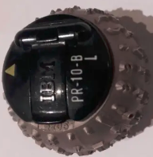
-
De agujas (Matriciales)
- Tiene una matriz de agujas que impactan sobre el papel.
- Cuantas más agujas tenga mayor será la resolución.

- Sin impacto
- Térmicas: agujas calientes tocan papel termo sensible (cajeros).
- Inyección o chorro de tinta: tira gotas de tinta.
- Sublimación de tinta: se usa calor para transferir la tinta.
- Laser.
Según el método de impresión
Hay 3 tipos:
- Carácter a carácter
- Matriciales.
- Margarita.
- Térmica.
- Inyección.
- Línea a línea
- Cinta.
- Cadena.
- Tambor.
- Página a página: laser
Lenguajes de descripción de página (LDP)
-
Describen el formato de la página (colación del texto, gráficos, etc.).
-
Hay 3 tipos
- PostScript: 1982 por Adobe Systems.
-
PCL (Printer Command Language)
- Desarrollado por HP.
- Para impresoras de chorro de tinta.
- Actualmente está la versión PCL6
- HPGL: para plóter (impresora lineal para ambitos científicos.)
Elementos de almacenamiento
Interfaces
- Parallel ATA (PATA)
- Interfaz para conectar dispositivos de almacenamiento como discos duros, floppy disk y lectoras de CD.
- La extensión ATAPI permite conectar con lectoras de CD.
-
Serial ATA (SATA)
- Reemplata a PATA.
- Sirve para discos duros, lectoras de CD, y discos de estado solido SSD.
-
| Version |
Velocidad (el doble) |
Nombre |
| SATA 1.0 |
1.5 Gbit/s = 150 MB/s |
SATA-150 |
| SATA 2.0 |
3 Gbit/s = 300 MB/s |
SATA-300 |
| SATA 3.0 |
6 Gbit/s = 600 MB/s |
SATA-600 |
RAID
- Redudant Array of Independent Disks.
- Un RAID es un grupo de discos duros permiten redundancia en los datos.
- 6 Niveles
- Raid 0
- Distribuye los datos equitativamente entre 2 o más discos.
- Raid 1
- Raid 2
- Raid 3
- Raid 4
- Raid 5
- Raid 6